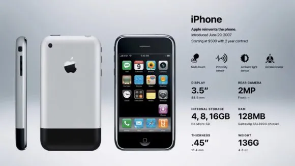

The first Generation iPhone
Release Date - June 29, 2007
Steve Jobs took the stage at the MacWorld convention on January 9th,
2007, announcing the commencement of iPhone history and the official
start of the smartphone era.
Later that year, on June 29, 2007, the initial iPhone hit the
shelves in the United States, marking the official start of a
transformative period.
To say that Jobs accurately predicted that this new product would
revolutionize the phone industry would be an understatement. By
September of the same year, Apple had already sold one million
iPhones. Since then, sales have steadily increased, reaching over 2
billion iPhones sold by 2017. But what made this first iPhone so
special and distinctive?

Specification
- A 2-megapixel camera (the front-facing camera was not included in the first model)/li>
- A Samsung 32-bit, 412 MHz processor with 128 MB RAM (note: at this point in iPhone history, Apple was not making its own processors)
- Bluetooth 2.0 capability
- The first version of iOS, which was upgradable to iOS 3.3
- WiFi capability
- Document viewer
- Photo/video viewer
- Predictive text input
- 3.5 mm headphone jack
- Google Maps integration
- GPS
- HTML support
- 8 hours talk time on 2G
- 6 hours of battery life on WiFi
- 7 hours of battery life for videos
- 24 hours of battery life for watching videos
- 4GB internal memory ($499) or 8GB ($599)